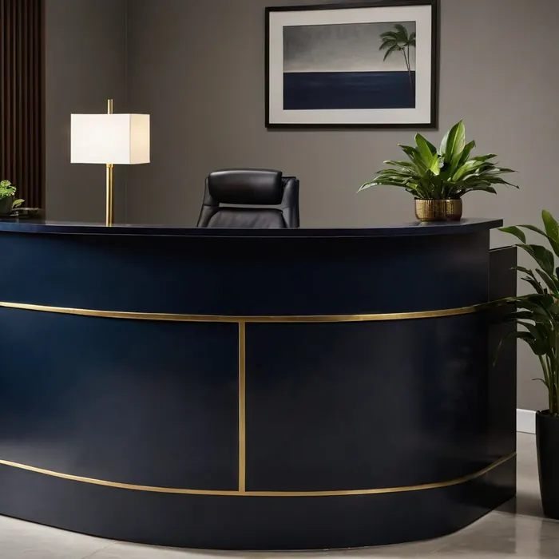

Abertura de empresa
CNPJ, inscrição, alvará e enquadramento. Cuidamos do processo inteiro e explicamos o regime que sai mais barato para o seu caso.
a partir de R$ 890
Campinas e região · desde 1998
Cuidamos da parte chata para você cuidar do negócio. Abertura de empresa, folha, imposto e a conversa que faltava para você entender para onde vai o seu dinheiro.

Quem somos
O escritório começou numa sala de 20 m² no Cambuí, com o Sr. Nelson Marino atendendo doze clientes. Hoje somos catorze pessoas e cuidamos de mais de trezentas empresas — quase todas pequenas, quase todas da região.
O que não mudou foi o jeito: cada cliente tem um contador responsável, com nome e telefone. Você não fala com "o escritório", fala com alguém.
O que fazemos
Cada serviço com explicação de gente, não de manual. Se não ficar claro, é porque a gente escreveu mal — pergunte.
CNPJ, inscrição, alvará e enquadramento. Cuidamos do processo inteiro e explicamos o regime que sai mais barato para o seu caso.
a partir de R$ 890
Escrituração, apuração de imposto, balancete e as obrigações do mês, sem você precisar lembrar de nenhum prazo.
a partir de R$ 390/mês
Admissão, férias, rescisão, eSocial e o cálculo certo do encargo. Inclui o aviso do que vence no mês.
R$ 45 por funcionário
Declaração de pessoa física para sócios e autônomos, com revisão do que dá para deduzir legalmente.
a partir de R$ 320
Análise do regime atual e simulação de troca. Vale quando o faturamento muda de faixa ou a atividade muda.
sob orçamento
Empresa parada, com pendência ou dívida: levantamos a situação e apresentamos o caminho antes de cobrar qualquer coisa.
sob orçamento
Mande o faturamento aproximado e a atividade. A gente responde com o regime que sai mais barato e o valor do honorário, sem compromisso.
Quem atende
Isto aqui é o que um site institucional tem e uma landing page não: espaço para mostrar quem são as pessoas.
Sócio-fundador · CRC 1SP 000000
Contador desde 1991. Cuida da parte tributária e das empresas maiores da casa.
Sócia · CRC 1SP 000000
Responsável pela contabilidade mensal e pelo atendimento do dia a dia.
Coordenador de folha
Cuida de admissão, férias, rescisão e eSocial. É quem seu RH vai procurar.
Clientes
“Troquei de escritório porque nunca conseguia falar com ninguém. Aqui eu mando mensagem e a Priscila responde no mesmo dia.”
“Abriram minha empresa em nove dias e ainda me explicaram por que o Simples valia mais que o Lucro Presumido no meu caso.”
“A folha nunca mais atrasou. Antes eu descobria o encargo no dia de pagar; hoje recebo o aviso uma semana antes.”
Antes de trocar de contador
Para você, quase nenhum. A gente pede a procuração eletrônica, busca a documentação com o escritório anterior e confere as pendências antes de assumir. O que você faz é assinar dois documentos.
Atendemos, com valor reduzido. Mas somos honestos: se o seu caso é só a declaração anual do MEI, na maior parte das vezes você consegue fazer sozinho e a gente explica como.
Às vezes dá, às vezes não. A troca de regime tem prazo no calendário e só vale a pena com conta feita. Fazemos a simulação antes de sugerir qualquer mudança.
Não. O envio de documento é por WhatsApp ou e-mail e as guias chegam do mesmo jeito. Quem prefere presencial é bem-vindo — só pedimos hora marcada.
Levantamos a situação inteira e apresentamos o caminho antes de cobrar qualquer coisa. Empresa com pendência é o caso mais comum que chega aqui, e quase sempre tem solução.
Fale com a gente
Atendemos presencialmente com hora marcada e por WhatsApp todos os dias úteis.